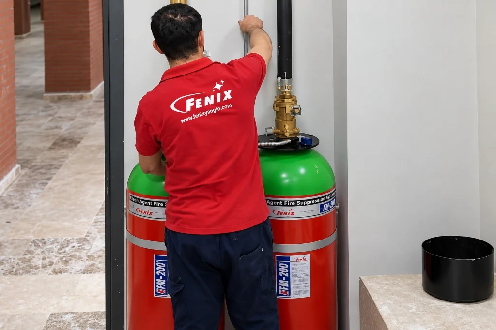

Gazlı Yangın Söndürme Sistemlerinde Periyodik Bakım ve Hidrostatik Test Rehberi
Veri merkezleri, UPS odaları, arşivler ve elektrik trafo merkezlerinde kurulan temiz gazlı söndürme sistemleri (FM-200, Novec 1230, CO2, IG-541), yıllarca bekleme modunda hazır duran acil durum kalkanlarıdır. Ancak zamanla sızdırmazlık contalarının yıpranması, azot itici basıncının düşmesi, dedektör optik hücrelerinin tozlanması veya odadaki yapısal tadilatlar nedeniyle sistem yangın anında çalışamaz hale gelebilir.
6331 Sayılı İSG Kanunu ve Binaların Yangından Korunması Hakkında Yönetmelik, yangın söndürme tesisatlarının düzenli periyotlarla kontrol edilmesini işverenin yasal sorumluluğu olarak tanımlar. Bakımı yapılmamış veya TSE-HYB belgesiz taşeronlara emanet edilmiş sistemler, olası bir yangında sigorta hasar ödemelerinin tamamen reddedilmesine ve işverenin şahsi cezai yaptırımlarla karşılaşmasına sebep olur.

Yangın Sistemlerinde Bakım Yaptırmak Yasal Olarak Zorunlu mu? (6331 İSG Kanunu)
Birçok işletme sahibi veya tesis yöneticisi, gazlı söndürme sistemini kurduktan sonra bakımın isteğe bağlı bir hizmet olduğunu düşünür. Oysa Türkiye Cumhuriyeti yürürlükteki mevzuatına göre yangın tesisatlarının bakımı kesin bir yasal zorunluluktur:
6331 Sayılı İş Sağlığı ve Güvenliği Kanunu
İşveren, acil durum planlarının ve tahliye araçlarının yanı sıra yangınla mücadele ekipmanlarının daima işlevsel, kalibre edilmiş ve kullanıma hazır durumda tutulmasını sağlamakla yükümlüdür. Yapılmayan her periyodik kontrol için İSG teftişlerinde ağır idari para cezaları uygulanır.
İş Ekipmanlarının Kullanımında Sağlık ve Güvenlik Şartları Yönetmeliği
Yangın tesisatı, borulama, silindirler, algılama hatları ve pompalar "İş Ekipmanı" statüsündedir. Standartlarda süre belirtilmemişse, azami 1 yıllık periyotlarla yetkili mühendislerce kontrol edilerek periyodik kontrol raporu (İSG Sicil Belgesi) düzenlenmesi zorunludur.
Binaların Yangından Korunması Hakkında Yönetmelik (Madde 98 & 100)
Gazlı söndürme sistemlerinin tasarım, montaj, test ve bakım standartlarının TS ISO 14520 ve NFPA 2001 normlarına uygun olması şart koşulmuştur. Tesis işletmecisi sistemin işletme ve bakım kayıt defterini tutmak ve itfaiye denetimlerinde ibraz etmek zorundadır.
Yasal zorunlulukların haricinde, endüstriyel tesisler için hayati olan Yangın danışmanlık ve mühendislik denetimlerinde de görüldüğü üzere; yetkisiz ellerce bakımı yapılmamış veya kaydı tutulmamış sistemler sebebiyle sigorta ekspertizleri yangın hasar tazminatlarını tamamen reddetmektedir.
Standartlara Göre Bakım Periyotları (NFPA 2001 ve ISO 14520 Takvimi)
Uluslararası standartlar, gazlı söndürme sisteminin operasyonel sağlığını korumak için aşamalı bir kontrol takvimi belirlemiştir. Bu takvim haftalık basit gözlemlerden başlayıp yıllık kapsamlı fonksiyonel senaryolara kadar uzanır:
Haftalık ve Aylık Görsel Kontroller (Manometre ve Basınç Doğrulama)
Tesisin kendi teknik ekibi veya İSG uzmanı tarafından haftalık/aylık olarak gerçekleştirilebilecek bu kontroller sistemin ilk savunma hattıdır:
- Manometre İbre Kontrolü: Silindir üzerindeki manometre ibresinin yeşil (normal çalışma) bölgesinde olup olmadığı izlenir (Genellikle 20°C'de 24.8 bar veya yüksek basınç sistemlerinde 42/50 bar).
- Mekanik Sabitleme: Silindir kelepçelerinin, montaj profillerinin ve sismik askıların gevşemediği, silindir gövdesinde harici korozyon veya darbe bulunmadığı teyit edilir.
- Nozul ve Dağıtım Hattı: Korunan mahalde nozulların önüne engelleyici raf, pano veya mobilya konulmadığı, nozul çıkış deliklerinin açık olduğu kontrol edilir.
- Kontrol Paneli Durumu: Yangın söndürme kontrol panelinde "Arıza" (Fault), "Devre Dışı" (Disable) veya "Toprak Hatası" sarı ledlerinin yanmadığı doğrulanır.
6 Aylık Bakım: Ultrasonik Sıvı Seviye Ölçümü ile Gaz Kaybı Kontrolü
Her 6 ayda bir TSE-HYB yetki belgeli uzman mühendislik servisi tarafından sahada hassas test cihazlarıyla gerçekleştirilir:
Hassas Ultrasonik Ölçüm ve Ağırlık Doğrulama
FM-200 ve Novec 1230 sıvılaştırılmış gazlardır. Yalnızca manometreye bakmak yeterli değildir; çünkü gaz sızsa dahi üstteki azot gazı manometreyi bir süre yanıltıcı şekilde normal gösterebilir. Bu nedenle, ultrasonik sıvı seviye göstergesi (Ultrasonic Liquid Level Indicator) ile silindir gövdesi taranarak gerçek gaz seviyesi milimetrik olarak tespit edilir.
Standartlara göre, net söndürücü gaz ağırlığında %5'in üzerinde bir kayıp veya basınçta %10'un üzerinde bir düşüş tespit edilirse, sistem derhal servis dışı sayılarak lisanslı dolum tesisimizde acil FM200 gaz dolumu veya azot itici tazelemesi yapılmalıdır.
Öte yandan kurumsal tesislerde bakım planlaması yapılırken, yalnızca sunucu odalarındaki gazlı sistemler değil, mutfak hatlarında can güvenliğini sağlayan Davlumbaz yangın söndürme ekipmanlarının da eriyen lehim ve mekanik tetikleme hatları bu 6 aylık periyotlarla eşzamanlı denetlenmelidir.
Yıllık Kapsamlı Bakım ve Senaryo Testleri (Algılama ve Otomasyon Entegrasyonu)
Yılda bir kez sistemin tüm elektriksel, mekanik ve otomasyon entegrasyonu simüle edilir. Bu aşamada korunan mahalde yangın senaryosu canlandırılır:
- Solenoid Vana Güvenlik Ayırması: Test esnasında gazın kazara boşalmasını önlemek için elektrikli/pnömatik tetikleyici (solenoid) silindir vanasından fiziksel olarak sökülür ve test soketine bağlanır.
- Çapraz Zon (Cross-Zone) Algılama Doğrulaması: 1. zon dedektörü uyarıldığında ön alarm sireni çalar; 2. zon dedektörü dumanı algıladığında 30 saniyelik geri sayım başlar ve solenoid tetikleme akımı üretir.
- Otomasyon Kesme Sinyalleri: Söndürme paneli yangın sinyali ürettiğinde havalandırma (HVAC) santrallerinin kapandığı, yangın damperlerinin kapandığı ve mahal elektriğinin kesildiği teyit edilir.
- Manuel Boşaltma ve Durdurma Butonları: Sarı renkli "Söndürmeyi Durdurma" (Abort) ve sarı/kırmızı "Acil Manuel Boşaltma" butonlarının tepki süreleri test edilir.
Modern binalarda veri merkezi ve elektrik odalarını koruyan FM200 yangın söndürme sistemleri otomasyon panelleriyle entegre çalışmadığında, gaz boşalsa bile çalışan fanlar gazı anında dışarı emerek sistemi etkisiz kılar. Yıllık senaryo testi bu riskleri tamamen bertaraf eder.
10 Yıllık Kritik Eşik: Silindir Hidrostatik Basınç Testi Nasıl Yapılır?
Gazlı söndürme tüpleri yüksek basınç altında (25 bar ile 200 bar arası) yıllarca kesintisiz bekleyen çelik kaplardır. Metal yorulması, mikro çatlaklar veya korozyon sonucu silindirin patlama riski oluşturmaması için Basınçlı Ekipmanlar Direktifi (PED 2014/68/EU) ve TS EN 1968 / ISO 18119 standartları 10 yılda bir hidrostatik test yapılmasını zorunlu kılar.
Gazın Güvenli Geri Kazanımı (Recovery)
Silindir içerisindeki pahalı temiz gaz (FM-200 veya Novec 1230), sıfır emisyonlu kapalı devre kurtarma ünitemiz ile depolama tanklarına aktarılır. Gaz atmosfere salınmaz, korunur.
İç Endoskopik Muayene ve Su ile Basınçlandırma
Vana sökülür, tüp içi endoskopik kamera ile korozyon ve çatlak açısından incelenir. Ardından silindir suyla doldurulup korumalı test havuzunda çalışma basıncının 1.5 katına (örneğin 25 barlık tüp için ~38 bar, 200 barlık tüp için ~300 bar) çıkarılır.
Kalıcı Genleşme Ölçümü, Fırınlama ve Sertifikalandırma
Büret sistemiyle tüpün elastik ve kalıcı genleşme oranı hesaplanır. Testi geçen tüpler fırında nemden tamamen arındırılır, yeni vana contaları takılır, üzerine bir sonraki 10 yıllık geçerlilik tarihi soğuk damgayla basılır ve test sertifikası düzenlenir.
Oda Sızdırmazlık (Door Fan) Testinin Yenilenmesi Gereken Durumlar
Gazlı söndürme sistemlerinde en kusursuz nozul ve silindir tasarımına sahip olsanız dahi, odanın duvarları veya zemininde sızıntı varsa yangın sönmez. Gaz havadan ağır olduğu için zemindeki kablo geçişlerinden veya tavan aralıklarından kaçar. ISO 14520 ve NFPA 2001 gereğince temiz gazın odada en az 10 dakika boyunca söndürme konsantrasyonunda kalması (Holding Time) zorunludur.
Standartlara göre yılda bir kez gözden geçirilmelidir. Ancak mahalde; kablo kanalı geçişleri, klima borulaması, kapı değişimi, asma tavan veya yükseltilmiş taban tadilatı yapılmışsa yangın sızdırmazlık bütünlüğü (Room Integrity) bozulmuş sayılır ve Oda Sızdırmazlık Testi (Door Fan Testi) derhal yenilenmelidir.
TSE-HYB Yetki Belgesi Olmayan Firmalara Yaptırılan Bakımın Riskleri (Sigorta Reddi)
Türkiye'de yangın sektöründe yaşanan en büyük tehlikelerden biri, yetkisiz ve standart dışı "çanta tipi" aracı firmalara bakım yaptırılmasıdır. TSE 13345 veya TS 12820 Hizmet Yeterlilik Belgesi (TSE-HYB) bulunmayan firmalarla çalışmanın sonuçları:
- Sigorta Şirketinin Hasar Ödemesini Reddetmesi: Yangın sonrasında sigorta eksperleri bakım formlarını, gaz dolum sertifikalarını ve yapan firmanın TSE-HYB lisansını talep eder. Belgesiz formlar sunulduğunda "ağır ihmal" gerekçesiyle tazminat ödenmez.
- İSG Denetimlerinde Geçersizlik: Bakanlık müfettişleri denetiminde yetkisiz formlar kabul edilmez ve yasal süre verilerek ceza kesilir.
- Tetikleme Arızası ve Can Kaybı: Yanlış takılan vana emniyet pimleri yangın anında silindirin patlamasına veya gazın hiç boşalmamasına neden olabilir.
Gazlı Söndürme Bakım ve Kontrol Takvimi Özeti
| Bakım / Kontrol Türü | Periyot | Uygulayıcı Yetki | Kritik Eşik / Başarısızlık Şartı | Yasal Standart |
|---|---|---|---|---|
| Görsel & Manometre | Haftalık / Aylık | Tesis Sorumlusu / İSG | İbrenin kırmızıya düşmesi, darbe/hasar | NFPA 2001 / Binalar Yön. |
| Ultrasonik Seviye Testi | 6 Aylık | TSE-HYB Yetkili Servis | %5 Gaz Kaybı veya %10 Basınç Düşüşü | ISO 14520 Madde 9.2 |
| Senaryo & Otomasyon | Yıllık (12 Ay) | Uzman Yangın Mühendisi | Damper/HVAC durduramama, dedektör hatası | 6331 İSG / TS EN 15004 |
| Door Fan Sızdırmazlık | Yıllık / Tadilat Sonrası | Sertifikalı Fan Test Ekibi | Gaz tutunma süresinin 10 dk altına inmesi | NFPA 2001 Ek B |
| Hidrostatik Basınç Testi | 10 Yılda Bir | Akredite Test İstasyonu | Gövdede kalıcı genleşme, korozyon, çatlak | PED 2014/68/EU / EN 1968 |
Sıkça Sorulan Sorular
Gazlı yangın söndürme sistemlerinin periyodik bakımı yasal olarak zorunlu mudur?
Evet. 6331 Sayılı İş Sağlığı ve Güvenliği Kanunu, Binaların Yangından Korunması Hakkında Yönetmelik ve İş Ekipmanlarının Kullanımında Sağlık ve Güvenlik Şartları Yönetmeliği uyarınca gazlı yangın söndürme tesisatlarının yılda en az bir kez akredite mühendisler tarafından denetlenmesi ve periyodik kontrol raporunun düzenlenmesi yasal zorunluluktur.
FM-200 ve Novec 1230 silindirlerinde gaz kaçağı nasıl tespit edilir?
NFPA 2001 ve ISO 14520 standartlarına göre 6 aylık periyotlarda hassas ultrasonik sıvı seviye göstergesi (Ultrasonic Liquid Level Indicator) kullanılarak silindiri yerinden sökmeden gaz seviyesi ölçülür veya silindir tartılır. Gaz miktarında yüzde 5'in üzerinde kayıp veya basınçta yüzde 10'un üzerinde düşüş tespit edilirse silindir derhal yeniden doldurulmalıdır.
10 yıllık hidrostatik test nedir ve neden yapılmalıdır?
Basınçlı kap yönetmelikleri (PED) ve EN 1968 standardı gereğince, gazlı söndürme silindirleri 10 yılda bir hidrostatik basınç testine tabi tutulmalıdır. Bu işlemde silindir boşaltılır, suyla doldurularak işletme basıncının 1.5 katı test basıncına çıkarılır ve gövdede kalıcı genleşme veya metal yorulması olup olmadığı kontrol edilir.
Oda sızdırmazlık (Door Fan) testi hangi durumlarda tekrarlanmalıdır?
NFPA 2001 standardı korunan hacmin sızdırmazlığının yılda bir kez kontrol edilmesini veya mahalde asma tavan, yükseltilmiş taban, duvar tadilatı veya yeni kablo geçişleri yapıldığında Door Fan testinin derhal yenilenmesini şart koşar. Sızdırmazlığı kaybolan odada gaz tutunma süresi sağlanamaz.
TSE-HYB belgesi olmayan firmadan bakım hizmeti almanın riskleri nelerdir?
TSE-HYB (Hizmet Yeterlilik Belgesi) bulunmayan yetkisiz şahıs veya firmaların düzenlediği bakım formları Çalışma Bakanlığı İSG müfettişleri ve itfaiye tarafından geçersiz sayılır. Ayrıca olası bir yangında sigorta şirketleri yetkisiz bakım gerekçesiyle hasar tazminatını tamamen reddeder.
Tesisinizi Yasal Güvenceye Alın: Periyodik Bakım Sözleşmesi
TSE-HYB belgeli mühendislerimizle gazlı söndürme sistemlerinizin periyodik bakımını, hidrostatik testlerini ve İSG raporlamasını eksiksiz tamamlayalım.